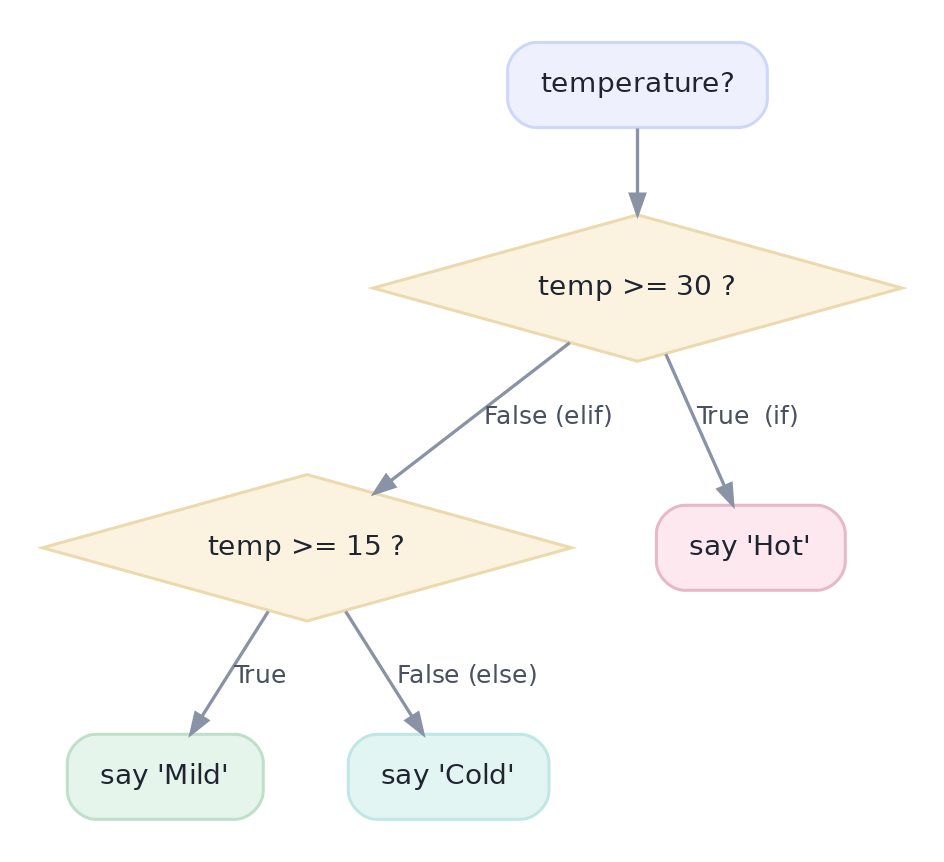
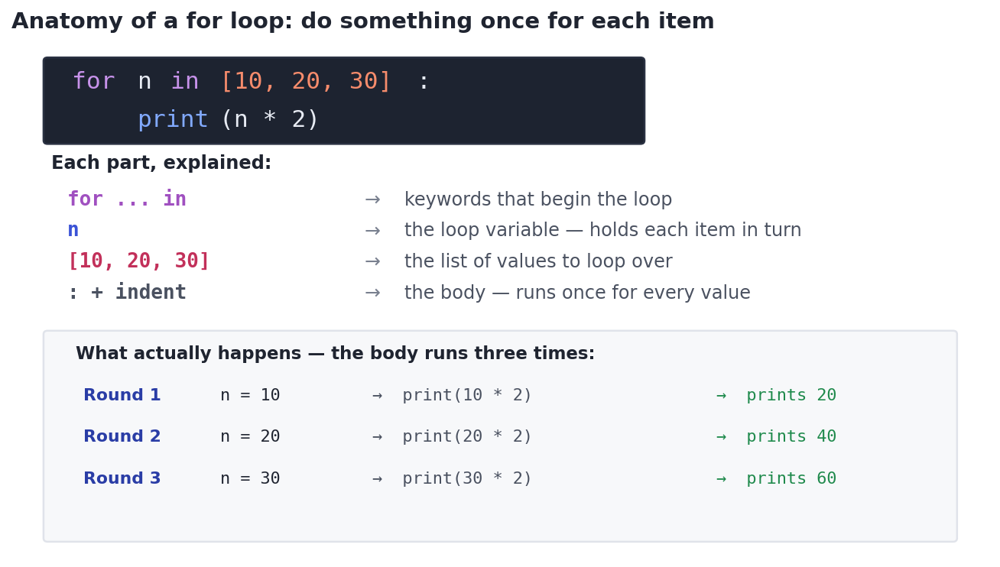
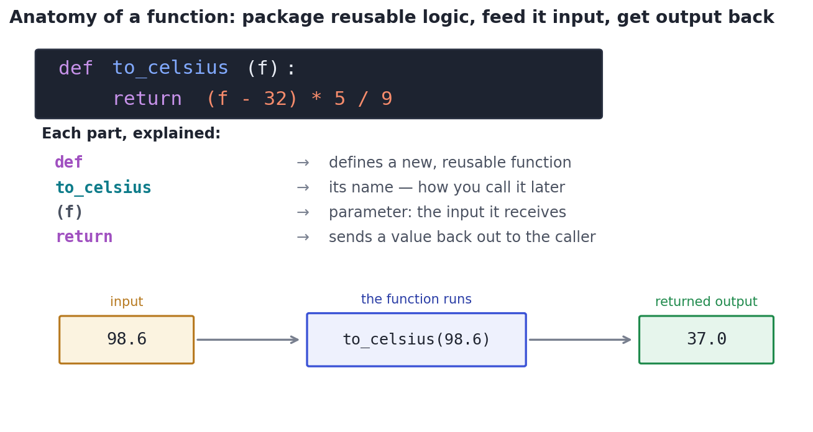
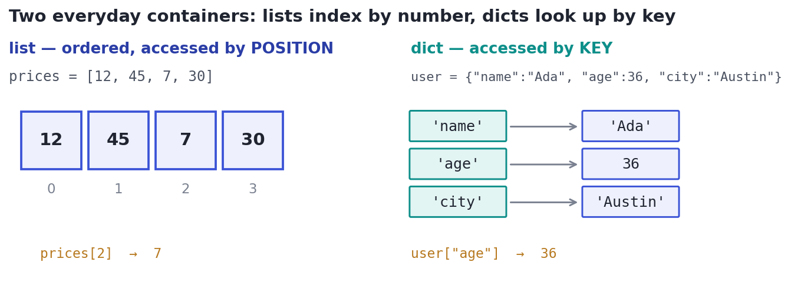

Python for Data, From Zero
Assuming zero coding: variables, types, conditionals, loops, functions, and collections — each shown, run, and explained before the next builds on it.
Statistics told you what to compute; now you need a tool to actually do it. That tool is Python — the language data science runs on. We assume zero prior coding here: every idea is shown, run, and explained before the next one builds on it. By the end you'll read and write the small set of Python that the rest of this course — NumPy, Pandas, modeling — is built from.
OrientationHow you run Python
You write Python as plain text and run it; whatever you print(...) shows up as output. You'll do this in one of two places:
- A script — a file ending in
.pythat runs top to bottom all at once. - A notebook (a
.ipynbfile, like the capstone) — a page of cells you run one at a time, seeing each result immediately. Notebooks are where most data analysis happens because you can explore step by step.
Every code box below is real and runnable: press ▶ Run to execute it right here in your browser, or copy it into a notebook. The grey Output panel shows exactly what it prints. Try changing a number and running again — that's how you learn.
Step 1 · the atomsValues, types, and variables
A value is a single piece of data, and every value has a type. The four you'll use constantly:
- int — whole numbers like
3or-10 - float — decimals like
87.5 - str — text ('strings'), always in quotes:
"Austin" - bool — a truth value, either
TrueorFalse
A variable is just a name that points at a value, created with = (read it as 'gets'). And an f-string — a string with an f in front — lets you drop values neatly into text. Run this:
# A variable is a NAME for a value. Python infers the type automatically.
city = "Austin" # str (text, in quotes)
n_orders = 3 # int (whole number)
total = 87.5 # float (decimal)
is_member = True # bool (True or False)
print(city, n_orders, total, is_member)
print("the type of city is", type(city))
print("the type of total is", type(total))
# An f-string drops values into text. {total:.2f} shows 2 decimal places.
print(f"{city}: {n_orders} orders worth ${total:.2f}")Austin 3 87.5 True the type of city is <class 'str'> the type of total is <class 'float'> Austin: 3 orders worth $87.50
The # starts a comment — Python ignores everything after it on the line. Comments are notes for humans; use them to explain why, not just what.
Step 2 · doing things to valuesArithmetic and comparisons
Python is a calculator with names. Beyond + - * /, two operators surprise beginners: // is whole-number division (drops the remainder) and % ('modulo') is the remainder itself — handy for 'is this even?' or 'every 10th row.' Comparisons (>, <, ==, !=) don't compute a number; they produce a bool, which is exactly what the decisions in Step 3 run on.
a, b = 7, 2 # assign two variables at once
print("add", a + b, "| subtract", a - b, "| multiply", a * b)
print("divide", a / b, "| whole-divide", a // b, "| remainder", a % b)
# A comparison returns a bool (True / False), not a number:
print("is a greater than b?", a > b)
print("are they equal?", a == b) # note: == compares, = assignsadd 9 | subtract 5 | multiply 14 divide 3.5 | whole-divide 3 | remainder 1 is a greater than b? True are they equal? False
= and == are different and mixing them up is the #1 beginner bug. A single = assigns (x = 5 means 'let x be 5'); a double == compares (x == 5 asks 'is x equal to 5?', giving True or False). Use == inside if conditions.
Step 3 · choosing a pathMaking decisions: if / elif / else
Often you want different actions depending on a condition. if runs a block only when its condition is True; elif ('else if') checks another condition if the first was False; else catches everything left. Python decides what's 'inside' a block by indentation — the spaces at the start of a line — following the : at the end of the if line. Same indent = same block.

else runs only if none matched.temp = 22
if temp >= 30:
label = "Hot" # this line is indented -> it's inside the 'if'
elif temp >= 15:
label = "Mild"
else:
label = "Cold"
print(f"{temp} degrees is {label}")22 degrees is Mild
Step 4 · do it for each itemRepeating work: the for loop
Data means doing the same thing to many values, and the for loop is how. It walks through a sequence, and on each pass a loop variable holds the current item while the indented body runs. Read for p in prices: as 'for each p in prices, do the following.'

prices = [12, 45, 7, 30]
total = 0
for p in prices: # p becomes 12, then 45, then 7, then 30
total = total + p # the indented body runs once per value
print("total:", total)
# range(n) produces 0, 1, ..., n-1 — useful for counting repetitions:
for i in range(3):
print("step", i)total: 94 step 0 step 1 step 2
There's also a while loop, which repeats as long as a condition stays True (rather than once per item). In data work you'll reach for for far more often, so we lead with it; while is in the deep dive.
Step 5 · name it once, reuse itPackaging logic: functions
When you find yourself doing the same calculation repeatedly, wrap it in a function: a named, reusable block. You define it with def, list any parameters (its inputs) in parentheses, and use return to send a value back. Then you call it by name whenever you need it.

def; later, feed it an input and it returns an output. Here, to_celsius(98.6) returns 37.0.def to_celsius(f): # f is the parameter (the input)
return (f - 32) * 5 / 9 # return hands a value back to the caller
# Call it with different inputs; each call returns a result.
print(to_celsius(98.6))
print(to_celsius(32))37.0 0.0
Step 6 · holding many valuesCollections: lists and dicts
Real data comes in groups, and two containers cover almost everything:
- A list is an ordered sequence accessed by position, counting from 0:
prices[0]is the first item,prices[-1]the last, and a sliceprices[1:3]takes positions 1 and 2 (the stop is excluded). - A dict (dictionary) maps keys to values, accessed by key:
user["age"]. Use it for labeled fields about one thing.

# LIST: ordered, accessed by position (starting at 0)
prices = [12, 45, 7, 30]
print("first:", prices[0], "| last:", prices[-1], "| middle two:", prices[1:3])
prices.append(99) # add an item to the end
print("after append:", prices, "| how many:", len(prices))
# DICT: accessed by key, not position
user = {"name": "Ada", "age": 36}
print("name:", user["name"])
user["city"] = "Austin" # add a new key -> value pair
print(user)first: 12 | last: 30 | middle two: [45, 7]
after append: [12, 45, 7, 30, 99] | how many: 5
name: Ada
{'name': 'Ada', 'age': 36, 'city': 'Austin'}Step 7 · loops, condensedThe Pythonic shortcut: list comprehensions
You now know loops and lists — so this last piece is just a shortcut for combining them. A list comprehension builds a new list from an old one in a single line. It does exactly what a for loop with .append() does; data scientists use it constantly because it's shorter and reads almost like English. It can filter, too, with an if at the end.
prices = [12, 45, 7, 30]
# The long way you already know: a loop that builds a new list.
doubled = []
for p in prices:
doubled.append(p * 2)
print("with a loop: ", doubled)
# The shortcut: a list comprehension. Same result, one line.
doubled = [p * 2 for p in prices]
print("with a comprehension:", doubled)
# Add an 'if' to keep only some items:
big = [p for p in prices if p > 20]
print("only values over 20:", big)with a loop: [24, 90, 14, 60] with a comprehension: [24, 90, 14, 60] only values over 20: [45, 30]
Read a comprehension right-to-left first: for each p in prices (the loop), keep it if p > 20 (the filter), *and put p*2 in the new list* (the transform). If a comprehension ever gets hard to read, a plain for loop is perfectly fine — clarity beats cleverness.
Worked examplePutting it together
Here's a real micro-analysis that uses everything from this lesson: a list of dicts (the shape data arrives in), a function, a filtering comprehension, dict access, and an f-string. This is the pure-Python version of work that Pandas will soon do in one line — but seeing it spelled out makes Pandas feel like magic instead of mystery.
orders = [
{"id": 1, "category": "Electronics", "amount": 180.0},
{"id": 2, "category": "Apparel", "amount": 45.0},
{"id": 3, "category": "Electronics", "amount": 220.0},
{"id": 4, "category": "Beauty", "amount": 30.0},
]
def average(values): # a reusable helper
return sum(values) / len(values)
all_amounts = [o["amount"] for o in orders] # every amount
elec = [o["amount"] for o in orders if o["category"] == "Electronics"] # filtered
print(f"{len(orders)} orders | total ${sum(all_amounts):.0f} | average ${average(all_amounts):.2f}")
print(f"electronics only: {elec} | average ${average(elec):.2f}")4 orders | total $475 | average $118.75 electronics only: [180.0, 220.0] | average $200.00
★ Key points to remember
- A variable names a value; core types are int, float, str, bool.
=assigns,==compares. - if / elif / else choose a path; indentation (after the
:) defines what's inside a block. - A for loop runs its indented body once per item; the loop variable holds the current value.
- A function (
def…return) packages reusable logic: feed it inputs, get an output back. - list = ordered, by position from 0 (slices exclude the stop); dict = by key. A comprehension is a one-line loop-and-build.
x = 8, an if x % 2 == 0: block prints 'even' and its else: prints 'odd'. What gets printed?[p * 2 for p in [5, 10, 15]] evaluate to?prices = [12, 45, 7, 30], what is prices[-1]?def double(x): x * 2 has no return. After result = double(5), what is result?◆ Practice▸
for loop that prints a greeting like 'Hello, Ada!' for each name in names = ["Ada", "Linus", "Grace"].Show solution & reasoning
for name in names:
print(f"Hello, {name}!")The loop variable name takes each value in turn, and the indented f-string runs once per name, printing the greeting for Ada, then Linus, then Grace.
is_adult(age) that returns True if age is 18 or more, otherwise False. What does is_adult(15) return?Show solution & reasoning
def is_adult(age):
return age >= 18Since age >= 18 already evaluates to a bool, you can return it directly — no if/else needed. is_adult(15) returns False, because 15 >= 18 is False.
nums that appends n to a list out only when n > 0.Show solution & reasoning
out = [n for n in nums if n > 0]It keeps each n from nums where n > 0 — the same result as the loop, in one readable line. (If a comprehension ever reads awkwardly, the plain loop is equally correct.)
◎ Deep dive: indexing rules, mutability, while loops, None, and truthiness▸
0-indexing and exclusive slices, precisely. A list of length n has positions 0 through n−1. A slice a[start:stop] includes start but excludes stop, so a[0:2] gives two items (positions 0 and 1). Negative indices count from the end (a[-1] is last). Almost every off-by-one bug traces back to these two rules.
Mutability and the reference trap. Lists and dicts are mutable (changeable in place); ints, floats, strings, and bools are immutable. Crucially, b = a makes b point at the same list as a, so b.append(9) also changes a. For an independent copy use a.copy(). This silent sharing is a classic source of 'why did my other variable change?' bugs.
while loops and None. A while loop repeats as long as a condition holds: while balance > 0: ... — useful when you don't know the number of repetitions in advance (just ensure the condition eventually becomes False, or it loops forever). Separately, None is Python's 'no value' marker, returned by functions that don't return anything and used for missing data; test for it with x is None, and keep it distinct from 0 or "".
Truthiness. In a condition, empty things are treated as False: 0, 0.0, "", [], {}, and None. So if orders: reads as 'if there are any orders.' Convenient, but watch the case where 0 is a legitimate value you didn't mean to treat as empty.
Early screens often include a quick Python warm-up: FizzBuzz, reversing a list, counting word frequencies with a dict, or filtering with a comprehension. Know cold that indexing starts at 0, slices exclude the stop, = assigns while == compares, and a function without return yields None. Clean, correct basics signal you can actually code.